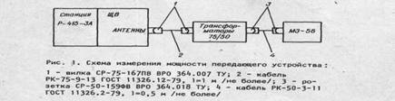
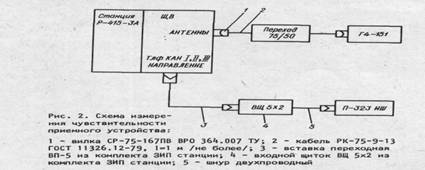

Тема: «Радиорелейная
станция Р-415».
Занятие №4.
Техническое обслуживание радиорелейной станции Р-415.
Учебные вопросы:
1. Общие положения.
2. Порядок проведения технического обслуживания.
Учебные и воспитательные цели:
1. Изучить порядок проведения
технического обслуживания радиорелейной станции Р-415.
2. Закрепить у личного
состава полученные знания и навыки.
3. Совершенствовать на
практике полученные знания и навыки.
4. Воспитывать у личного
состава бережное отношение к военной технике и имуществу.
Место: класс
связи.
Метод:
рассказ, показ, тренировка.
Время: 50
мин.
Учебно-материальное обеспечение:
Литература:
1. Инструкция по эксплуатации радиорелейной станции Р-415.
2. Электронное учебное пособие «Радиорелейная станция Р-415».
ТСО:
1. Радиорелейная станция Р-415.
2. Электронный тренажер «Радиорелейная
станция Р-415».
РАСЧЕТ
УЧЕБНОГО ВРЕМЕНИ
|
№ п.п. |
Содержание занятия |
Время (мин) |
|||
|
1. |
Вступительная часть - Принимаю доклад о
готовности взвода к занятию. - Проверяю наличие личного состава,
внешний вид, готовность к занятию. - Довожу тему, цели,
учебные вопросы, литературу для самостоятельного изучения учебного материала
и ТСО, порядок проведения занятия. - Напоминаю меры по ТБ при работе на средствах связи. - Провожу контрольный опрос
по ранее изученному учебному материалу |
5 5 |
|||
|
2. |
Основная часть
Учебные вопросы: 1. Общие положения Под
техническим обслуживанием понимают мероприятия, обеспечивающие контроль за техническим
состоянием аппаратной, т.е. поддерживание ее в исправном состоянии,
предупреждение отказов в работе и продление ресурса. Своевременное
и полное выполнение технического обслуживание РРС в процессе эксплуатации является
одним из важнейших условий поддержания ее в постоянной готовности к работе,
сохранения стабильности исходных параметров и установленного срока службы. Меры безопасности
Все
работы на средствах связи следует выполнять в строгом соответствии с действующими
руководящими документами по правилам и мерам безопасности, а также
эксплуатационной документацией. Соблюдение правил и мер безопасности является
обязательным во всех случаях. Условия
работ, срочность их выполнения и другие причины не могут служить основанием
для нарушения правил и мер безопасности. К
работе со станцией допускается персонал, имеющий твердые практические навыки
в ее эксплуатации и обслуживании, знающий соответствующие правила и сдавший
зачет по мерам безопасности. ПОМНИТЕ,
что небрежное или неумелое обращение со станцией, нарушение инструкции по
эксплуатации и мер безопасности может вызывать выход из строя станции, а
также привести к несчастным случаям. 2. Порядок проведения технического обслуживания
Порядок проведения ежедневного технического
обслуживания Проверка состояния и профилактика вводного щита, блоков и аппаратных
стоек. Очистите наружные поверхности вводного щита, блоков и аппаратных стоек. При этом: - проверьте чистоту разъемов
вводного щита, наличие на них защитных крышек. Контактные поверхности штырей
и гнезд разъемов протрите ветошью, смоченной в спирте; - слегка увлажненной мягкой
ветошью протрите поверхности, окрашенные эмалевой или масляной краской (в
зимнее время – сухой ветошью); - сухой кистью удалите пыль с
лицевых панелей и органов управления блоков (не изменяйте положения органов
управления при работе на радиолинию); - протрите защитные стекла
измерительных приборов чистой мягкой сухой ветошью; - ветошью, смоченной спиртом
или бензином, смойте трудноудаляемую грязь и масляные пятна, вымытые
места протрите насухо; - произведите уборку в
аппаратном и агрегатном отделениях. Потолок и стены протрите слегка влажной
ветошью, пол подметите щеткой. Проверка работоспособности станции при
работе на радиолинию Проверка работоспособности
станции при работе на радиолинию. При этом: - проверьте напряжение питания
на выходе выпрямителя, при необходимости отрегулируйте; - проверьте наличие напряжения
питания на БПП, БКУ, БУК, БП по индикаторам ПИТ на лицевых панелях блоков; - проверьте исправность
приемопередающего устройства и наличие достаточного уровня высокочастотного
сигнала на входе приемника (светится индикатор ИСПРАВНО на БКУ). При мощности
передающего устройства меньше номинального значения на минус 3 - минус 6 дБ
загорается индикатор СВЯЗИ НЕТ ПРД. При уменьшении уровня высокочастотного
сигнала на входе приемника в пределах
от 1,2 до 3 мкВ загорается индикатор СВЯЗИ НЕТ ПРМ; - проверьте мощность
передающего устройства по измерительному прибору БКУ. Для этого: - поставьте переключатель
ИНДИКАЦИЯ на БКУ в положение ВЫХ.ПРД. остальные переключатели и тумблеры
должны находиться в положениях, определяемых режимом работы станции.
Стрелочный прибор БКУ при этом должен показывать не менее минус 2дБ, как в
положении НОРМ, так и в положении ПОНИЖ тумблера МОЩН. Проверка состояния и профилактика кузов Проверьте систему защиты личного состава от поражения электрическим
током следующим образом: -
проверить заземление станции и вынесенных агрегатов; -
установить на щите автоматической защиты (ЩАЗ) кузова ручку силового автомата
в положение ОТКЛ.; -
установить на выпрямителе Б09 ручку автомата защиты и тумблер ЗАРЯД в нижнее
положение; -
установить на щите коммутации питания (ЩКП) переключатель выбора источника
питания в положение ВЫКЛ.; -
установить на блоке управления аккумуляторами тумблер ВЫКЛ. МАССЫ в
выключенное положение; -
отключить цепь внешней сети (вынесенного агрегата) и убедиться с помощью
прибора Ц-4342 в отсутствии напряжения на клеммах, к которым производится
подключение; -
подсоединить силовой кабель к разъему ВХОД 220В 50 Гц щита силового ввода; -
соединить силовой кабель длиной -
установить на аппаратных шкафах полукомплектов тумблеры СЕТЬ в выключенное
положение; Проверить
работу защитного устройства (ЗОУ) следующим образом: -
включить внешнюю сеть или запустить агрегат. При этом на ЩАЗ кузова горит
лампочка СЕТЬ ВКЛЮЧЕНА, на ЩКП - лампочка СЕТЬ; -
поставить ручку силового автомата защиты ЩАЗ в верхнее положение, при этом
ЩАЗ горит лампочка АВТОМАТ ВКЛЮЧЕН; - нажать кнопку ПРОВЕРКА ЗОУ на защитно-отключающем
устройстве, при этом на ЗОУ и ЩКП горят лампочки ЗАЩИТА, а лампочки СЕТЬ на
ЩКП и СЕТЬ ВКЛЮЧЕНА на ЩАЗ кузова гаснут, что свидетельствует о срабатывании
защитного устройства ЗОУ; -
нажать кнопку СБРОС на ЗОУ, при этом гаснут лампочки ЗАЩИТА и СЕТЬ ВКЛЮЧЕНА
на ЩАЗ. После этого можно приступить к включению питания аппаратуры. ВНИМАНИЕ! Проверку работы ЗОУ производить каждый раз при подключении
электропитания станции от внешней сети или вынесенного бензоагрегата путем
трехкратного нажатия кнопки ПРОВЕРКА ЗОУ. Порядок проведения ежемесячного технического обслуживания Проверка ежемесячного технического состояния станции производится в
следующих случаях: после
длительного хранения или
транспортирования станции; периодические (регламентные) проверки
технического состояния станции. Проверка ежемесячного технического состояния станции производится в следующем
порядке: внешний осмотр; проверка прохождения режима настройки; проверка прохождения режима автоматизированного контроля; измерение электрических параметров. Внешний осмотр станции производится в
соответствии с инструкцией по техническому обслуживанию. Проверка прохождения режима настройки
и автоматизированного контроля производится в соответствии с настоящей
инструкцией. Методика измерения электрических
параметров станции приведена в инструкции по техническому обслуживанию. Результаты измерения параметров
заносятся в формуляр. Технологическая карта № 5 Проверка
работоспособности станции по встроенным приборам. Средства измерений: встроенные приборы и индикаторы. Инструменты: комплект инструмента станции. Расходные материалы: нет. Трудозатраты: 1 человек - 2 часа для Р-415-ЗА1, 1 человек - 3 часа для Р-415-ЗА. При проверке работоспособности системы электропитания: 1) заземлить станцию, подключить сеть 220 В, 50 Гц; 2) проверить срабатывание
устройства защитного отключающего ЗОУ; 3) установить на БРП
переключатель в положение СЕТЬ и; проверить величину напряжения по вольтметру
~ 220 В, на БРП. Проверить исправность цепей
питания от агрегата, работающего в кузове, и электроустановки, для чего: 1) запустить агрегат и
проверить его работоспособность в соответствии с инструкцией по эксплуатации
на агрегат; 2) установить на БРП
переключатель в положение СЕТЬ и по вольтметру ~220 В убедиться в наличии
напряжения 220 В,50 Гц на входе БРП;. . 3) запустить
электроустановку и проверить ее работоспособность в соответствии с
инструкцией по эксплуатации на электроустановку; 4) установить на БРП
переключатель в положение ЭУ
и по вольтметру ~220 В проверить наличие напряжения на входе БРП; 5) нажать кнопку МАССА автошасси в кабине автомобиля; 6) нажать кнопку СИГНАЛ ВОДИТЕЛЮ на БРП и убедиться,
что при этом работает сигнал водителя. Для проверки
работоспособности выпрямителя Б09: 1) включить на БРП автоматы МАССА и РОЗЕТКИ 24 В; 2) установить на БРП переключатель ЗАРЯД-БУФЕР в положение
ЗАРЯД; 3) установить на БРП переключатель Б09 на БРП в
положение ВКЛ., при этом должны
засветиться индикаторы: — на передних панелях субблоков СО901 —
индикаторы РАБ. — на панели СО902 - индикатор СЕТЬ. При нормальной работе
выпрямителя на БРП амперметр АККУМУЛЯТОРЫ ТОК должен показывать ток заряда
от 6 до 36 А, а вольтметр АККУМУЛЯТОРЫ НАПРЯЖЕНИЕ - напряжение заряда аккумуляторов; 4) включить освещение щита
вводного. Для проверки аварийного
режима питания аппаратуры станции: включить
аппаратуру станции (стойки
аппаратные, пульт оператора); установить
на БРП переключатель источника электроэнергии в положение ВЫКЛ. При этом гаснет общее освещение кузова, включается
плафон аварийного освещения, аппаратура должна работать без каких-либо
отклонений режима, амперметр на БРП АККУМУЛЯТОРЫ ТОК покажет ток разряда,
вольтметр АККУМУЛЯТОРЫ НАПРЯЖЕНИЕ — напряжение аккумуляторов. При разряде аккумуляторов до
20 В на БРП загорается индикатор АККУМУЛЯТОРЫ РАЗРЯЖЕНЫ. Запрещается разряжать
аккумуляторы ниже 20 В. Установить на БРП переключатель источника электроэнергии
в положение СЕТЬ. При этом должно включиться общее освещение, выключается
плафон аварийного освещения, амперметр и вольтметр на БРП показывает заряд
аккумуляторов, а аппаратура работает от сети через выпрямитель Б09. В случае неправильного подключения полюсов батареи 4х5НКЛБ-70 на БРП светится
индикатор АККУМУЛЯТОРЫ ПЕРЕПОЛЮСОВКА. Произвести контроль работы станции (стоек аппаратных
I, II, III направлений) в режиме «КОНТР.
ПРМ» и «КОНТР. ПРД» следующим образом: установить на БКУ: тумблер ДЕЖ. ПРИЕМ-ДУПЛ, в положение ДЕЖ. ПРИЕМ, переключатель РАБОТА-КОНТР, в положение РАБОТА, тумблер МОЩН. — в положение НОРМ.; установить внутри БКУ: тумблер
ДЕВИАЦИЯ в положение НОРМ, тумблер СИМПЛ.
в положение ВЫКЛ., тумблер КОНТР. - РЕГ. — в положение КОНТР.; тумблер Упрд-Упрм — в положение Упрд, переключатель УПРАВЛЕНИЕ — в положение БКУ; переключатели ПРИЕМ, ПЕРЕДАЧА — в положение БУК; переключатель КАНАЛ ДУ — в положение ВЫКЛ.; установить переключатель
ДИАПАЗОН на ПП (Б 18) в положение выбранного диапазона (разъем
АНТЕННА приемопередатчика выбранного диапазона должен быть
обязательно подключен к
антенне или к нагрузке Б22); 4)установить
на синтезаторе частот частоты передачи и приема на которых будет производиться
проверка станции, с учетом минимального разноса между частотами приема и
передачи: 161ФЧ — для приемопередатчиков диапазона «1»; 75ФЧ — для приемопередатчиков диапазона «Д»; 5) нажать кнопку HACTPOЙKA на синтезаторе
частот, при этом должна производиться настройка станции (загораются и гаснут
индикаторы КОНТР. АНФ); 6) Установить тумблер ДЕЖ.
ПРИЕМ-ДУПЛ. в положение ДУПЛ, и переключатель
РАБОТА-КОНТР. — в положение КОНТР. ПРМ (Контр. ПРД; 7)
проверить работоспособность станции по индикаторам ОТКАЗЫ на передней панели
БКУ. Признаком исправного состояния станции является отсутствие свечения
индикаторов ОТКАЗЫ и свечение индикатора ИСПРАВНО; 8)
проверку работоспособности стойки аппаратной I направления при работе с УЦС и УЧА проводить в соответствии с п. 5.13.6 и
5.13.7 ЖЫ1 100 042 ИЭ (только для Р-415-ЗА). Для проверки выходной
мощности передатчика: 2) настроить приемопередатчики на ФЧ с учетом разноса
между частотами передачи и приема; 3) установить на БКУ
переключатель ИНДИКАЦИЯ в положение ВЫХ.ПРД, при этом показание стрелочного
прибора на БКУ должно быть минус 2 дБ, не менее, в любом положении тумблера
МОЩН. Проверить исправность антенно-фидерного устройства
каждого диапазона, для чего поставить переключатель ИНДИКАЦИЯ на БКУ в
положение ОТРАЖ., показание стрелочного прибора должно быть меньше, чем
показания прибора в положении ВЫХ.ПРД переключателя ИНДИКАЦИЯ на 8 дБ, не
менее. При проверке и
регулировке телефонных каналов: 1) установить на БКУ
переключатель РАБОТА-КОНТР, в положение КОНТР. ПРМ, внутри блока установить
тумблер КОНТР. - РЕГ. в положение РЕГ., тумблер Упрм-Упрщ - в положение Упрщ,
переключатель КАНАЛ ДУ - в положение ВЫКЛ.; 2) установить на блоке
уплотнения каналами переключатель ПВУ в положение I Тлф, верхние переключатели I и II Тлф каналов - в положение 4ПР. ОКОН., нижние
переключатели I, II Тлф каналов -
в положение КАН., переключатель КОНТР. УРОВНЯ - в положение I Тлф ПРИЕМ; 3) нажать на блоке
уплотнения каналами кнопку ИГ; 4) установить на блоке
уплотнения каналами потенциометром РЕГ. УРОВНЯ стрелку индикаторного прибора
на "О". Аналогично отрегулировать II Тлф канал; 5) проверить прохождение вызова
по телефонным каналам, для чего установить на БУК переключатель ПВУ в
положение I Тлф (II Тлф) и
нажать кнопку ВЫЗОВ СЛ., при этом на
БУК загорается индикатор ВЫЗОВ КАН. и включается звуковая сигнализация, на ПО
загорается индикатор НАПРАВЛЕНИЕ I (II, III). Нажать
кнопку ВЫЗОВ ОПЕР., при этом на БУК загорается индикатор ВЫЗОВ КАН. Проверить работу Тлг каналов для этого: 1) установить тумблер ВКЛ.
ПЕР.I Тлг канала в верхнее положение. При этом загорается
индикатор УРОВЕНЬ СИГНАЛА ПЕР. и УРОВЕНЬ СИГНАЛА ПРИЕМ; 2) нажать на блоке
уплотнения каналами кнопку Тчк; 3) нажать на блоке
уплотнения каналами кнопку КОНТР., при этом возможно горит одни из
индикаторов ПРЕОБЛАДАНИЕ "+", "-" или НОРМА. Если горит индикатор НОРМА, то канал регулировки не
требует, если горит индикатор "+" или "-", то с помощью
потенциометра ПРЕОБЛАДАНИЕ РЕГ. добиться загорания индикатора НОРМА. Аналогично отрегулировать II Тлг канал. Технологическая карта № 7 Измерение основных электрических параметров станции. Средства измерений: генератор сигналов
высокочастотный Г4-151, измеритель девиации частоты СКЗ-41, измеритель шумов
П-323 ИШ, ваттметр МЗ-56, измеритель краевых искажений ИК-ЗУ1, измерительный
прибор П-321 М. Инструмент: нет. Расходные материалы: нет. Трудозатраты: 2 человека - 9,5 часа. Измерить мощность передающего устройства на разъемах
щита вводного. При этом: 1) измерить мощность при
номинальном напряжении источника питания станции на следующих фиксированных
частотах: для диапазона "I" - 000, 400, 799; для диапазона "Д" - 350, 450, 549. ВНИМАНИЕ! ПРИ ПЕРЕКЛЮЧЕНИИ ДИАПАЗОНА
ПРИЕМОПЕРЕДАТЧИКА И ПРИ ИЗМЕНЕНИИ РАБОЧИХ ЧАСТОТ ТУМБЛЕР ДУПЛ.-ДЕЖ.ПРИЕМ УСТАНАВЛИВАТЬ
В ПОЛОЖЕНИЕ ДЕЖ.ПРИЕМ!; 2) собрать схему измерения в
соответствии с рис; 3) установить нужную
фиксированную частоту передачи и приема на блоке синтезатора частот с учетом
минимального разноса между частотами приема и передачи; 4) установить переключатель
КОНТР.-РАБОТА на блоке контроля и управления в положение РАБОТА; 5) установить тумблер ДЕЖ.
ПРИЕМ-ДУПЛ. в положение ДЕЖ. ПРИЕМ; 6) установить тумблер МОЩН.
в положение НОРМ.; 7) включить питание станции; 8) нажать кнопку НАСТРОЙКА
на блоке синтезатора частот, при этом произойдет перестройка на частоту, на
которой будет производиться измерение; 9) перевести тумблер ДЕЖ.
ПРИЕМ-ДУПЛ. в положение ДУПЛ.; 10) произвести отсчет
мощности (Р) по ваттметру МЗ-56 и рассчитать по формуле: Р = Ризм • К, (1) где Риэм - мощность, измеренная по ваттметру;   К - коэффициент, учитывающий затухание в кабеле между
БПП и ЩВ и равный 1,25 для стойки 1-го направления и 1,1 для стойки II-го и Ш-го направлений. Мощность передающего
устройства должна быть: 1) в режиме "НОРМ."; для диапазона "I" - 11 Вт, не менее; для диапазона
"Д" - 6,5 Вт, не менее; 2) в режиме
"ПОНИЖ." - 0,05-0,25 от значения в режиме "НОРМ.". Измерить чувствительность
приемного устройства при четырехпроводном включении Тлф каналов на тех же
частотах, что и измерение мощности. При этом проделать следующее: 1) собрать схему измерения в
соответствии с рис. 2; 2) установить на БКУ
тумблеры ДУПЛ.-ДЕЖ.ПРИЕМ в положение
ДЕЖ. ПРИЕМ, тумблер КОНТР-РЕГ. (внутри блока) - в положение РЕГ., тумблер
СИМПЛ. (внутри блока) - в положение ШКЛ., переключатель РАБОТА-КОНТР. - в
положение РАБОТА; 3) установить на блоке
уплотнения каналами переключатель ПВУ в положение ВЫКЛ., переключатель I (II) Тлф
(нижний) - в положение РАБ., переключатель I (II) Тлф
(верхний) - в положение 4ПР. ОКОН., тумблер ВКЛ. ПЕР.I (II) Тлг - в
нижнее положение; 4) включить станцию; 5) произвести настройку на
проверяемую частоту и отрегулировать уровни Тлф каналов; 6) подать от генератора
немодулированный сигнал с частотой, равной частоте настройки приемного
устройства; 7) установить выходное
напряжение генератора таким, чтобы напряжение шума на выходе Тлф канала
(клеммы 1а, 16 щитка вводного), измеренное измерителем шумов при установке
его переключателя рода работ в положение ТЛФ, стало равным 23 мВ (30,6 ДБ). При этом генератор
подстраивать по наибольшему подавлению шумов на выходе Тлф канала; 8) снять показания
чувствительности приемника по аттенюатору прибора и рассчитать по формуле
(2): Е = Еизм/К где Еизм - чувствительность, измеренная по
аттенюатору; К -
коэффициент, учитывающий затухание в кабеле между БПП и ЩВ, равный 1,12. Аналогично проверить чувствительность на всех
проверяемых частотах. Чувствительность приемного устройства должна быть в
диапазоне "I" 2,0 мкВ, не более, для I Тлф канала и 5 мкВ, не более, - для II Тлф канала "I" диапазона, в обоих каналах диапазона
"Д" - 4,5 мкВ, не более. Измерить девиацию частоты передающего устройства по
Тлф и Тлг каналам. Измерение производить на трех фиксированных частотах
каждого диапазона и каждого направления в дуплексном режиме. При этом
проделать следующее: 1) собрать схему измерения,
как показано на следующем рисунке;
2) установить тумблер
ДУПЛ.-ДЕЖ.ПРИЕМ в положение ДЕЖ. ПРИЕМ, тумблер МОЩН. - в положение НОРМ.,
переключатель КОНТР.-РАБОТА - в положение РАБОТА; 3) установить переключатель
ДИАПАЗОН на передней панели пульта переключений в положение проверяемого
диапазона; 4) установить внутри блока
БКУ переключатели: ПРИЕМ,
ПЕРЕДАЧА в положение БУК, ДЕВИАЦИЯ
- в положение НОРМ., Упрм.
- Упрщ.- в положение Упрщ., УПРАВЛЕНИЕ
- в положение БКУ, переключатель
КАНАЛ ДУ - в положение ВЫКЛ., тумблер
СИМПЛ. - ВКЛ. - ВЫКЛ. - в положение ВЫКЛ., тумблер
РЕГ. - КОНТР. - в положение РЕГ.; 5) установить: переключатели
I и II Тлф каналов
на БУК в положения 4ПР. ОКОН. и РАБ., тумблеры
ВКЛ. ПЕР. I и II Тлг каналов - в нижнее положение; 6) включить станцию и
настроить на частоту, на которой будут производиться измерения; 7) установить тумблер ДЖ. ПРИЕМ-ДУПЛ. в положение ДУПЛ.; 8) подать от прибора П-321М уровень минус 13 дБ (минус
1,5 Нп) частотой 800 Гц в I Тлф (II Тлф) канал на клеммы 2а, 26 щитка вводного ВЩ 5x2; 9) снять показания по шкале
измерителя девиации частоты, настроенного на частоту передатчика. Аналогично произвести измерения на других заданных
фиксированных частотах. Измерить девиацию частоты передающего устройства по I Тлг каналу следующим образом: 1) включить и настроить
станцию, как изложено выше; 2) установить тумблер ВКЛ.
ПЕР. I
Тлг канала на БУК в верхнее положение и
замерить девиацию. Аналогично произвести
измерение девиации по II Тлг каналу,
при этом тумблер ВКЛ. ПЕР. I Тлг канала
установить в нижнее положение. Девиация частоты передающего
устройства в режиме БУК должна быть: 1) в диапазоне "I" по Тлф каналам 8-1,2 кГц, по Тлг каналам
4,0-0,6 кГц; 2/ в диапазоне "Д"
по Тлф каналам 27-4,0 кГц, по Тлг каналам 13,5-2,0 кГц. Измерить девиацию частоты в
режиме "АПД", для чего: 1) установить
восьмиштырьковые вилки-перемычки на ПО в гнезда СОЕД. ЛИН. - АПД; 2) установить внутри БКУ
переключатели ПРИЕМ и ПЕРЕДАЧА в положение АПД; 3) подать от прибора П-321М
сигнал частотой 5 кГц уровнем 710 мВ на гнезда 2а, 2б щитка вводного ВЩ 5x2
при проверке I, II, III
направления в Р-415-ЗА1 и II, III направления в Р-415-ЗА; на гнезда ВХ. ПЕР. на БКУ
при проверке I направления связи в Р-415-ЗА,
предварительно отключив кабель № 73
от УЦС; 4) снять показания по шкале
измерителя девиации частоты. Девиация частоты передающего устройства должна
быть 36,0+5,4 кГц в диапазоне "I" и 122,0+18,0 кГц в диапазоне
"Д"; 5) подключить кабель № 73 к
УЦС для Р-415-ЗА; Проверить искажения Тлг
каналов при скорости телеграфирования 200 Бод, при этом: 1) проверить станцию в
режиме КОНТР. Прм; 2) установить внутри БКУ
тумблер КОНТР.-РЕГ. в положение РЕГ. ; 3) установить тумблеры ВКЛ.
ПЕР. I
Тлг и II Тлг каналов в верхнее положение; 4) установить нулевые
преобладания в каждом Тлг канале потенциометром РЕГ. ПРЕОБЛАДАНИЕ на БУК при
одновременном нажатии кнопок КОНТР, и Тчк по засвечиванию светодиодов НОРМА; 5) установить на приборе ИК-ЗУ1 переключатель входного
сопротивления в положение I kΩ,
переключатели СКОРОСТЬ БОД - в положение "200", переключатель РОД
РАБОТЫ - в положение СИНХР.1, переключатель ВИД СИГНАЛА - в положение ТЕКСТ,
переключатель СТЕПЕНЬ, ИНДИВИД. - в положение СТЕПЕНЬ; 6) подключить к клеммам 1а,
16 Тлг щитка вводного ВЩ 5x2 двухпроводным шнуром гнезда ВЫХОД ±20 В прибора
ИК-ЗУ1; 7) подключить к клеммам 2а,
26 Тлг щитка вводного ВЩ 5x2 двухпроводным шнуром гнезда ВХОД ДВУХПОЛЮСНЫЙ
прибора ИК-ЗУ1; 8) произвести по прибору
ИК-ЗУ1 отсчет синхронных искажений. Синхронные искажения телеграфных каналов
должны быть 5 %, не более. Проверить измерительный
генератор БУК, для этого: 1) установить на БКУ
переключатель РАБОТА-КОНТР, в положение КОНТР. Прм, внутри блока установить
тумблер КОНТР.-РЕГ. в положение РЕГ., тумблер Упрм-Упрщ - в положение Упрщ,
переключатель КАНАЛ ДУ - в положение ВЫКЛ.; 2) установить на блоке
уплотнения каналами переключатель ПВУ в положение I Тлф, нижние переключатели I и II Тлф каналов
- в положение КАН., переключатель КОНТР. УРОВНЯ - в положение I Тлф ПЕР.; 3) соединить гнезда ВХОД
прибора П-321М (на высокоомном входе) с гнездами ВХ. ПЕР. на БКУ и нажать
кнопку ИГ на БУК. При этом на индикаторном приборе БУК и на приборе П-321М
должно быть (0+1) дБ. Контрольные вопросы 1.
Что понимается под техническим обслуживанием? 2.
Доложите порядок проведения ЕТО? 3.
Доложите порядок проведения ТО-1? 4.
Доложите проверку работоспособности системы электропитания РРС Р-415? 5.
Как осуществляется проверка внутриузлового соединительного кабеля? 6.
Как проводится регулировка телефонных каналов? 7.
Как проводится регулировка телеграфных каналов? 8.
Как проводится измерение девиация частоты в режиме «АПД»? 9.
Как измеряется чувствительность приемного устройства? 10.
Как измеряется мощность РРС Р-415? |
35 |
|||
|
3. |
Заключительная часть - Напоминаю
тему, цели, учебные вопросы. - Подвожу
итоги, выставляю оценки. - Отвечаю на вопросы. - Выдаю задание на
самостоятельную работу. - Даю команду на окончание
занятия. Задание на самостоятельную работу: ИЗУЧИТЬ МАТЕРИАЛ: 1.
Электронное учебное пособие
«Радиорелейная станция Р-415». 2.
Учебник сержанта для войск связи. – М.: ВИ, 2010, с. 3. Материал конспекта. ЗНАТЬ: 1. Порядок проведения
технического обслуживания радиорелейной станции Р-415. УМЕТЬ: 1.
Доложить учебный материал. Литература для подготовки руководителя к занятию: 1.
Техническое описание и инструкция по эксплуатации радиорелейной станции Р-415. 2. Электронное учебное пособие
«Радиорелейная станция Р-415». Детализированные вопросы для самостоятельного
изучения: 1. Техническое
обслуживание радиорелейной станции Р-415. |
5 |